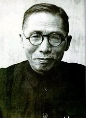

1949
1949

Kim Koo, född 1876 i Haeju, död 1949 i Seoul, var en koreansk nationalistisk politiker och pedagog.
Mellan 1919 och 1920 var han den koreanska exilregeringens polischef, mellan 1921 och 1922 dess inrikesministerier, fungerande statsminister är 1923 och arbetsmarknadsminister är 1924. Mellan 1927 och 1948 var han den siste presidenten för den koreanske exilregeringen i Shanghai. Vid etableringen av Sydkoreas nationalförsamling efter frigörelsen 1948 blev Kim nominerad till posten som president och vicepresident, men förlorade mot Syngman Rhee och Lee Si-yeong.
är 1949 blev Kim mördad på sitt eget kontor av Ahn Doo-hee.
Stalin fruktar en attack från Sydkorea
Fram till slutet av 1949 planerade Stalin ingen aggression mot Sydkorea. Istället var han orolig för en attack från söder, och han gjorde allt för att undvika att provocera Washington och Seoul. Under 1947-1948 trodde Sovjetiska ledare fortfarande på möjligheten av en sammanslutning i Korea och vägrade att underteckna ett separat vänskaps- och samarbetsavtal med NordKoreanska ledaren Kim II Sung.
I början av 1949 började den Sovjetiska ambassaden att varna Kreml om det växande antalet kränkningar av den 38:e gränslinjen av Sydkoreanska polisen och väpnade styrkor. Den 3 februari 1949 klagade den Sovjetiska ambassadären i Nordkorea Shtykov bittert över att Nordkoreanerna inte hade tillräckligt utbildad personal, tillräckliga vapen och tillräckligt många kulor för att avvisa intensifierande intrång från söder. Vid ett mottagande av Kim II Sung i Kreml den 5 mars 1949 visade Stalin öppen oro för att öka trycket från motståndaren i närheten av den 38:e parallellgraden och sa uttryckligen till Kim: "Den 38:e parallellgraden måste vara fredlig. Det är mycket viktigt."
Källa: The Origins of the Korean War - An Interpretation from the Soviet Archives - Evgueni Bajanov